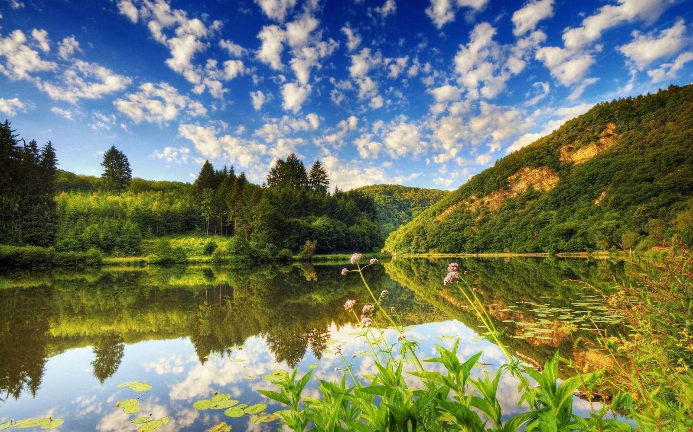
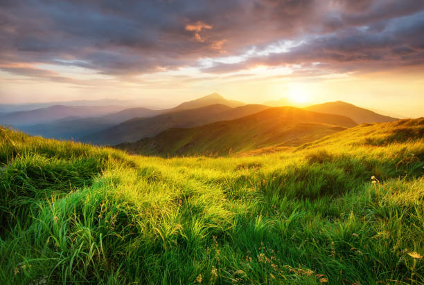
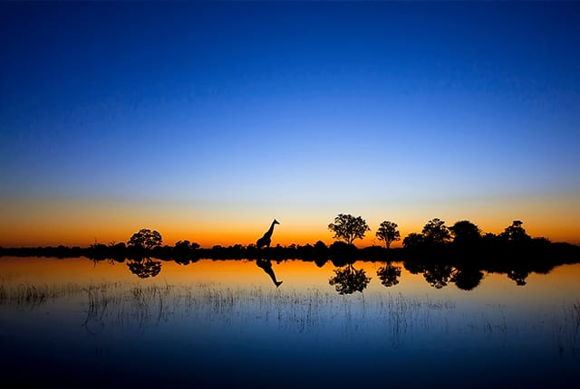

Exploring the wonders of the Nature
Nature never ceases to amaze us with its beauty, diversity, and intricate workings. Through this website, we hope to foster a deeper appreciation and understanding of the natural world. Join us on this virtual exploration and let nature's wonders inspire and awe you. Remember, we are mere visitors in this magnificent tapestry of life, and it's our responsibility to preserve and protect it for future generations.
Explore


